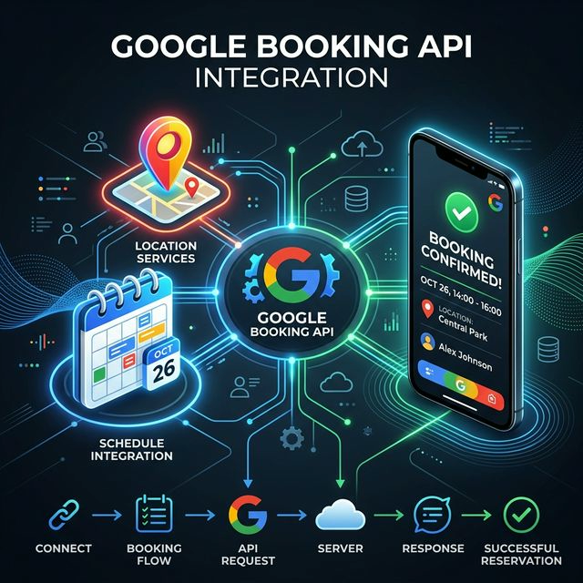

Featured · Enterprise Live on Search · Maps · Assistant
Lead engineer · Bitebooker
Reserve with Google Integration
Led the end-to-end integration of Reserve with Google into the Bitebooker restaurant-reservation platform, letting diners book a table directly from Google Search, Maps and Assistant.
- Built merchant, service and availability feeds
- Implemented the booking server —
BatchAvailabilityLookup,CreateBooking,UpdateBooking— plus real-time updates - Designed a multi-step booking wizard with step-level validation, keeping reservation data consistent across every channel